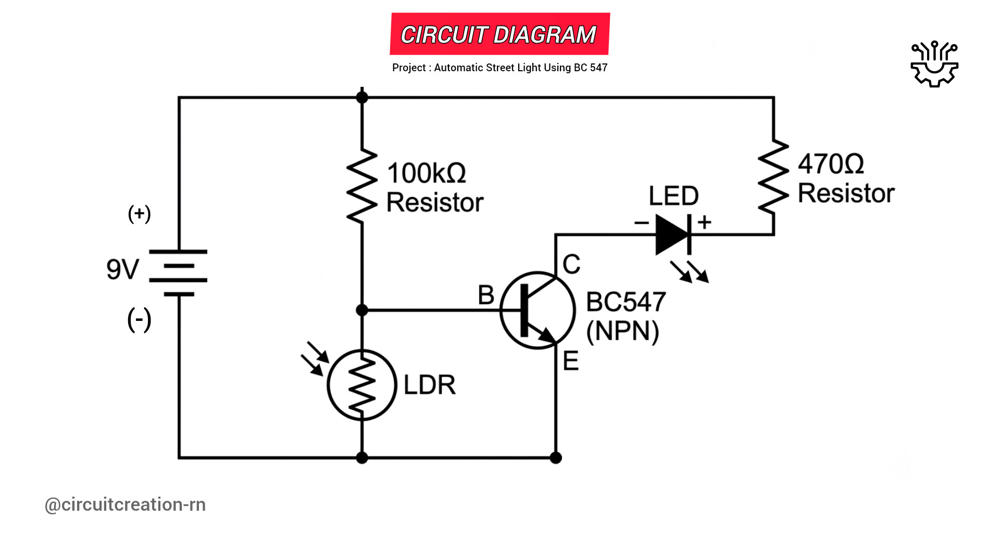

This Automatic Street Light project uses a BC547 transistor and an LDR (Light Dependent Resistor) to automatically switch an LED ON in darkness and OFF in daylight. It is a simple beginner friendly electronics project that demonstrates the basic working principle of light sensors without using Arduino or any microcontroller.

NE555
Pin 1 → GND
Pin 8 → +VCC
Pin 4 → +VCC
CD4017
Pin 16 → +VCC
Pin 8 → GND
Pin 13 → GND
Connect NE555 Pin 2 directly to Pin 6.
10µF Capacitor
Positive → Pins 2 & 6
Negative → GND
10kΩ Resistor
Pin 7 → Pins 2 & 6
100kΩ Resistor
+VCC → Pin 7
103 (0.01µF) Capacitor
Pin 5 → GND
NE555 Pin 3 → CD4017 Pin 14 (Clock)
CD4017 Pin 5 (Q6) → Pin 15 (RESET)
Connect the Emitter (E) of the BC547 transistor to the negative terminal of the 9V battery.
Connect the Collector (C) of the BC547 transistor to the negative terminal (short leg) of the LED.
Connect the positive terminal (long leg) of the LED to one end of a 470Ω resistor.
Connect the other end of the 470Ω resistor to the positive terminal of the 9V battery.
Connect a 100kΩ resistor between the positive terminal of the battery and the Base (B) of the BC547 transistor.
Connect one terminal of the LDR to the Base (B) of the BC547 transistor.
Connect the other terminal of the LDR to the negative terminal of the battery.
The LDR changes its resistance according to the surrounding light. During daylight, the LDR has low resistance, pulling the transistor base to ground and keeping the BC547 switched OFF, so the LED remains OFF.
When darkness falls, the LDR resistance increases. The 100kΩ resistor supplies base current to the BC547 transistor, turning it ON. Current then flows through the LED, causing it to glow automatically.
In bright light, the LDR offers very low resistance, preventing the transistor from switching ON. As a result, the LED stays OFF.
In darkness, the LDR resistance becomes high, allowing the BC547 transistor to conduct. The LED automatically turns ON, simulating an automatic street light.
Check the LDR connection and verify the BC547 pin configuration.
Ensure the LED polarity is correct, the battery is charged, and the resistor values are correct.
Yes, but you should increase the LED series resistor value to limit the current safely.
{kind=link}